Opening scene · a monastery morning under Tang rule
Incense rose for the living and the dead, while land rents and ledgers kept the house alive.
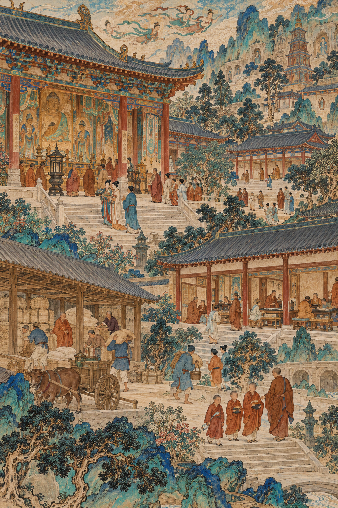
AI-generated historical scene unavailable Monastery courtyard at dawn
AI-generated historical interpretation in the Tang tomb-mural style. Clothing, architecture, and equipment are meant to evoke Tang religious and court life; this is not a surviving historical image.
Worship: scriptures, rituals, and prayers for donors and the state.
Social work: schools, lodging, care for the sick and aged.
Economy: land, mills, loans, and safekeeping that drew both gifts and suspicion.
A monastery was a religious house and a local institution of power.
Sources: Stanley Weinstein, Buddhism under the T'ang; Mark Edward Lewis, China's Cosmopolitan Empire.
The journey ahead · about 35 minutes
Follow Buddhism in society, then Wu's claim, then Xuanzong's court, and end with 845.
2 · WuRitual and prophecyTai, exams, Great Cloud, Zhou
3 · XuanzongPatron and regulatorReligion, arts, Li Bai and Du Fu
4 · Coda845Fiscal attack on institutions
Thesis: Tang rulers used religion and culture to make authority visible, and that patronage never erased tension (fiscal, doctrinal, succession).
Essential question from the lecture essay: What could religion and culture do for a ruler, and what could they not?
Buddhism woven into Tang society
Monasteries taught, lodged, lent, and prayed for the living and the state.
AI-generated historical scene unavailable Monastery as social institution
AI-generated historical interpretation in the Tang tomb-mural style. Clothing, architecture, and equipment are meant to evoke Tang religious and court life; this is not a surviving historical image.
Schools: temple literacy for many boys, below elite Confucian standards but far from nothing.
State use: Taizong ordered temples at major founding battle sites (629); later prefectures kept official temples for the realm.
Wealth explains popularity and official worry about lost revenue.
Sources: Weinstein; Britannica on temple schools; Cambridge History of China, vol. 3.
Adaptation · family duty meets Buddhist aid for the dead
Monks told Mulian's journey so listeners heard filial piety inside Buddhist rescue.
Story: Mulian, a monk, journeys to the underworld to save his suffering mother.
Medium: oral telling and pictures for audiences who could not read scripture.
Festival: seventh-month Ghost Festival offerings joined Buddhists and non-Buddhists.
Adaptation meant mutual change, not simple replacement of Chinese tradition.
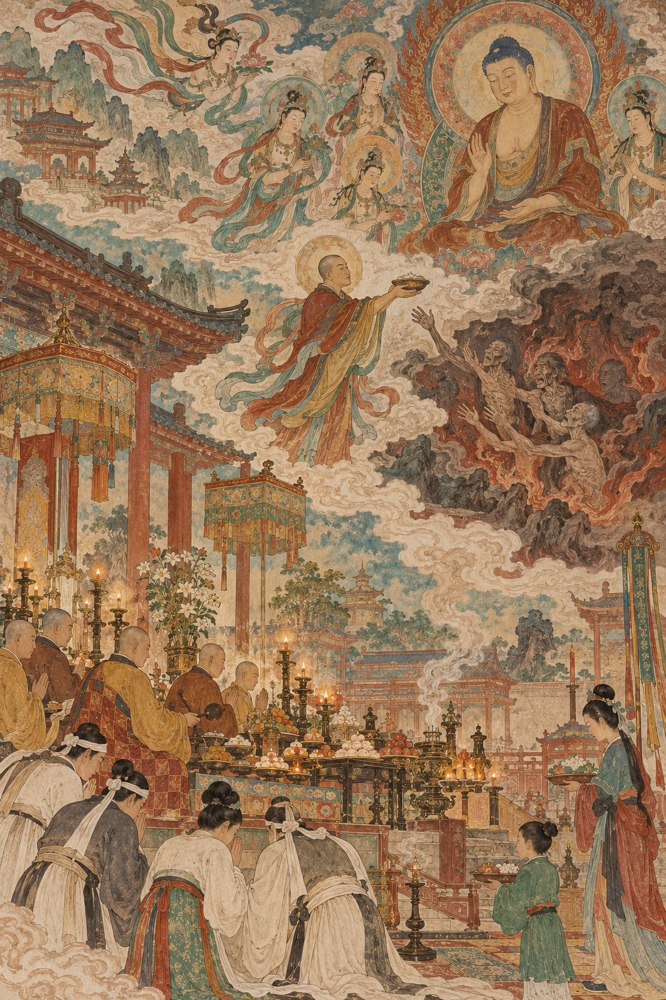
AI-generated historical scene unavailable Mulian story performance
AI-generated historical interpretation in the Tang tomb-mural style. Clothing, architecture, and equipment are meant to evoke Tang religious and court life; this is not a surviving historical image.
Sources: Stephen F. Teiser, The Ghost Festival in Medieval China.
Sacred geography and a Chinese school · light touch
Pilgrims climbed Mount Wutai, while Chan teachers stressed mind-to-mind insight.
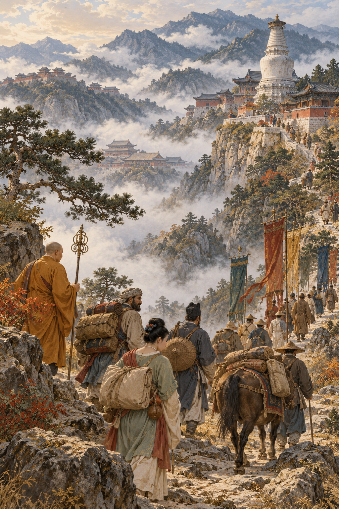
AI-generated historical scene unavailable Mount Wutai pilgrims
AI-generated historical interpretation in the Tang tomb-mural style. Clothing, architecture, and equipment are meant to evoke Tang religious and court life; this is not a surviving historical image.
Wutai: linked to the bodhisattva Manjusri; drew East Asian and wider pilgrims.
Ennin: Japanese monk in China 838 to 847; diary later helps us see late Tang religion (Pierian).
Chan: insight passed teacher to student; some lineages stressed sudden enlightenment.
Tonight: names and functions only. Debates and diary depth wait in Pierian Spring.
Sources: Reischauer on Ennin; surveys of Chan / Zen lineages; Lewis.
Check yourself · monasteries and adaptation
Which claim best matches the evidence so far?
Choose one, then defend it in a sentence.
Tang monasteries mattered mainly as quiet places for private meditation.
Monasteries mixed worship, social services, and economic power, which invited both gifts and official suspicion.
Buddhism replaced Chinese family values completely by the mid-Tang.
Pilgrimage and Chan prove that the Tang state ignored Buddhism.
Correct path: B. Mulian shows adaptation with family duty, not replacement. Pilgrimage and Chan show Chinese development under imperial tolerance and patronage, not state indifference.
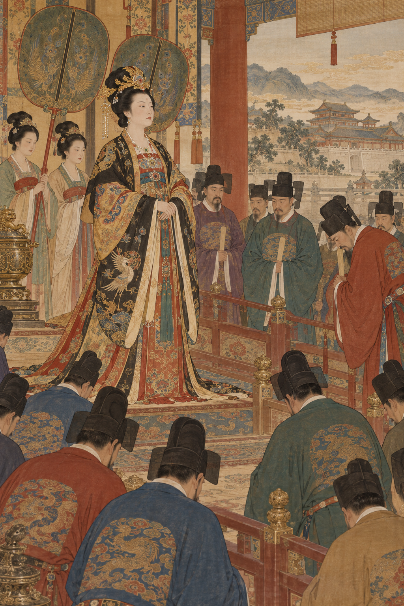
AI-generated historical scene unavailable Wu at the center of Tang power
Act II · Empress Wu
Wu built a claim no woman had held before from inside Tang institutions.
Court politics · Mount Tai · exams · Great Cloud · Zhou rule
AI interpretation · Wu's rise inside the palace world
From lesser consort to sovereign · 651 to 690
Wu rose through Gaozong's court, then ruled as dowager before taking the throne.
c. 651Entered Gaozong's palace as a lesser consort.
655Made empress after Empress Wang was demoted.
660+Gaozong's stroke; Wu increasingly handled state business.
683 to 690Dowager power, son-emperors managed, then Zhou claim.
Political base
Long stays at Luoyang; exams and promotions for men outside the old northwestern aristocracy.
Coercion
Purges and informers after 684 were real. Separate them from later sexual scandal tales in hostile histories.
Sources: N. Harry Rothschild; C. P. Fitzgerald; Cambridge History of China, vol. 3.
Mount Tai · feng and shan · first month of 666
Wu used yin and yang complementarity to claim a public ritual role beside the emperor.
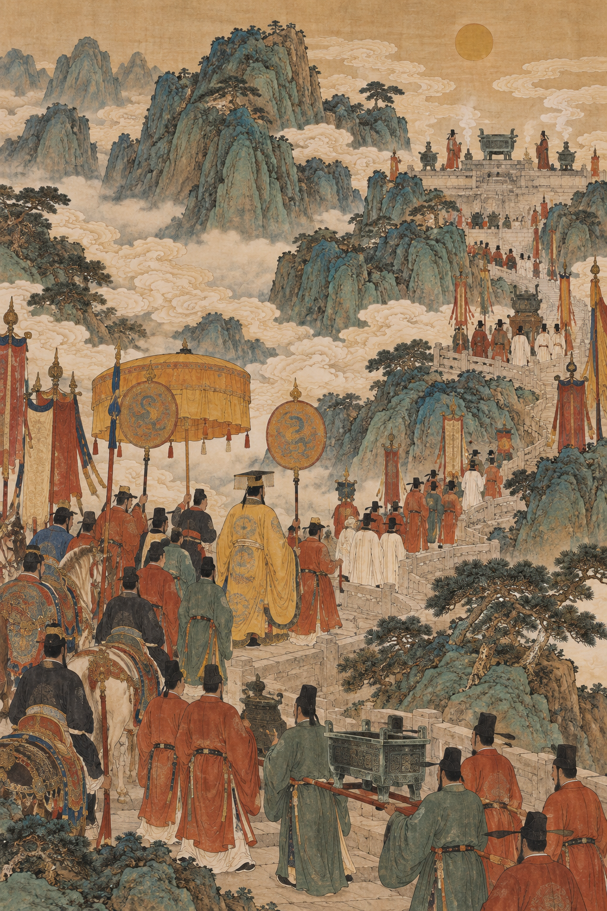
AI-generated historical scene unavailable Feng and shan at Mount Tai
AI-generated historical interpretation in the Tang tomb-mural style. Clothing, architecture, and equipment are meant to evoke Tang religious and court life; this is not a surviving historical image.
Rare rite: feng and shan announced dynastic success; long neglected before Gaozong and Wu.
Division: emperor to Heaven (yang) at the summit; Wu and palace women to Earth (yin) at the base.
Limit: the gendered structure stayed; Wu claimed a formal place inside it.
Ritual did not invent her power. It made a new public language for it.
Sources: Rothschild; standard Tang ritual chronologies in Cambridge History of China, vol. 3.
Recruitment politics · exams under Wu
Examinations helped Wu recruit officials who owed careers to her, not only to old clans.
Shift: more examination routes and promotions for men shut out by northwestern military elite dominance.
Luoyang: second capital distance from old aristocratic heartland.
659 genealogy: ranked families by office, not only pedigree memory.
A constituency of grateful officials was a political tool, not pure merit theater.
AI-generated historical scene unavailable Examination recruitment under Wu
AI-generated historical interpretation in the Tang tomb-mural style. Clothing, architecture, and equipment are meant to evoke Tang religious and court life; this is not a surviving historical image.
Sources: Twitchett; Rothschild; Chen et al. on the political economy of examinations.
Buddhist prophecy and stone · 675 to 690
Wu's supporters read a female monarch out of the Great Cloud Sutra while Longmen stone made power colossal.
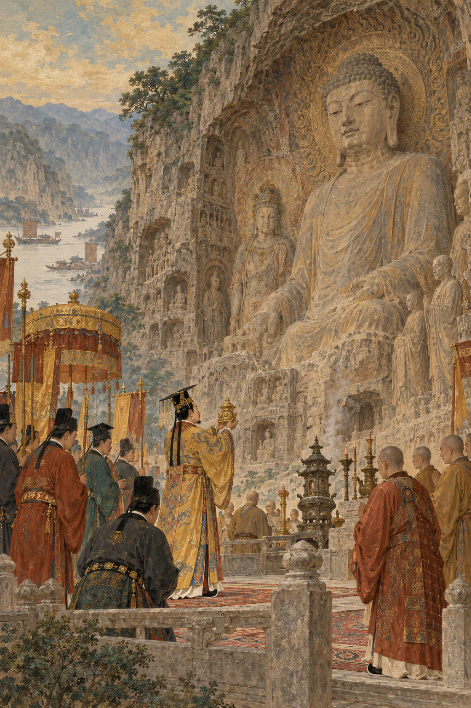
AI-generated historical scene unavailable Great Cloud prophecy and Longmen Vairocana
AI-generated historical interpretation in the Tang tomb-mural style. Clothing, architecture, and equipment are meant to evoke Tang religious and court life; this is not a surviving historical image.
Longmen: Wu helped patronize the colossal Vairocana Buddha, completed 675, near Luoyang.
Great Cloud: sutra foretold a female world ruler; commentary (c. 689 to 690) identified her with Wu and linked her to Maitreya.
Spread: after 690, a Great Cloud temple in every prefecture pushed the message.
Also Confucian: Mingtang (688); dynasty named Zhou after the classical model.
Many vocabularies at once: Buddhist prophecy, Confucian ritual hall, mythic and maternal models.
Sources: Antonino Forte; Rothschild, Emperor Wu Zhao and Her Pantheon.
Zhou dynasty · 690 to 705
Wu ruled as emperor until illness, officials, and guards forced abdication in 705.
690: Ruizong abdicated; Wu became emperor of a new Zhou.
Only case: the only woman in Chinese history to rule as emperor in her own right.
Limits: succession fights, Tang princes, frontier crises; Zhongzong restored as heir in the late 690s.
705: about age eighty and seriously ill; senior officials and palace guards forced her to abdicate; Tang restored; she died later that year.
Symbols needed coalitions of officials and soldiers behind them.
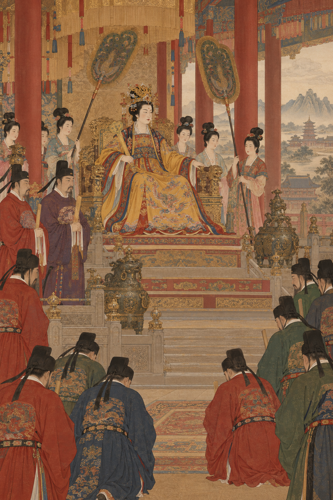
AI-generated historical scene unavailable Wu as Zhou emperor
AI-generated historical interpretation in the Tang tomb-mural style. Clothing, architecture, and equipment are meant to evoke Tang religious and court life; this is not a surviving historical image.
Sources: Rothschild; Fitzgerald; Twitchett.
Check yourself · Wu's toolkit
Which toolkit list is most accurate?
Pick the best answer.
Only Buddhist prophecy; she abandoned Confucian ritual.
Court politics, Mount Tai ritual, exam recruitment, Great Cloud prophecy, and Confucian symbols such as the Mingtang and the Zhou name.
Military conquest of the northwest alone, with no religious language.
Personal charisma without institutions.
Correct path: B. Wu assembled multiple vocabularies and institutional tools. Prophecy mattered because offices, capitals, and coercion also mattered.
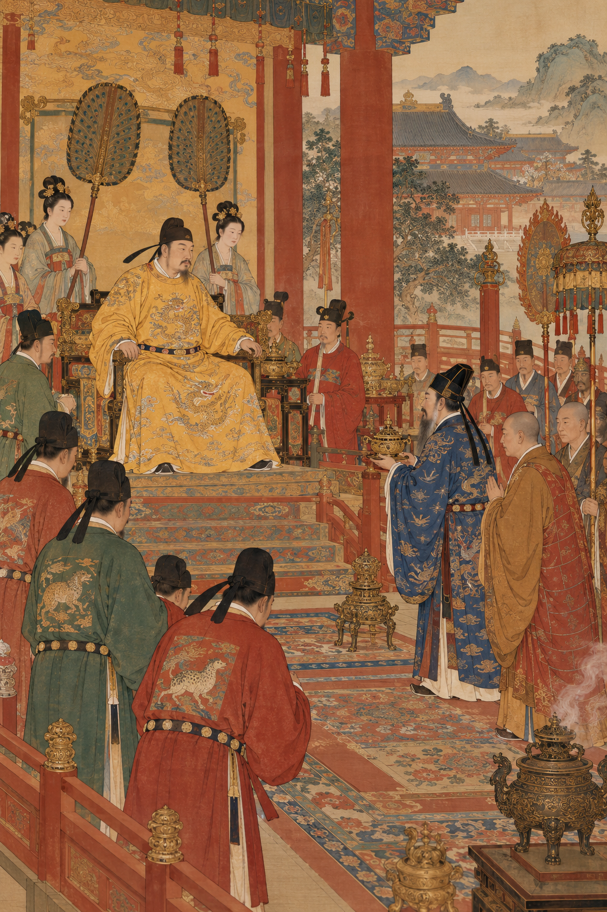
AI-generated historical scene unavailable Xuanzong as patron and regulator
Act III · Xuanzong
Xuanzong patronized religion and the arts while regulating the institutions he funded.
Support and control · Pear Garden · Li Bai and Du Fu
AI interpretation · Xuanzong's religious balancing act
Religious policy · support and control together
Xuanzong honored Laozi, invited Buddhist masters, and still pushed improperly ordained clergy back to lay life.
Patronage
Li surname linked the house to Laozi; Xuanzong wrote a Daodejing commentary.
Daoist schools and a Daoist scripture exam.
Buddhist clerics at court, including Tantric ritual masters for rain and victory rites.
Regulation
Early aim: curb monastery numbers and wealth grown under Wu.
Forced improperly ordained monks and nuns back to lay status.
Restricted new temple building.
Not a contradiction: governing meant funding sacred prestige and policing sacred institutions.
Sources: Weinstein; Lewis; standard Xuanzong reign narratives.
A brilliant court · painting, music, poetry
Xuanzong's court gathered painters, Pear Garden performers, and poets into the political center.
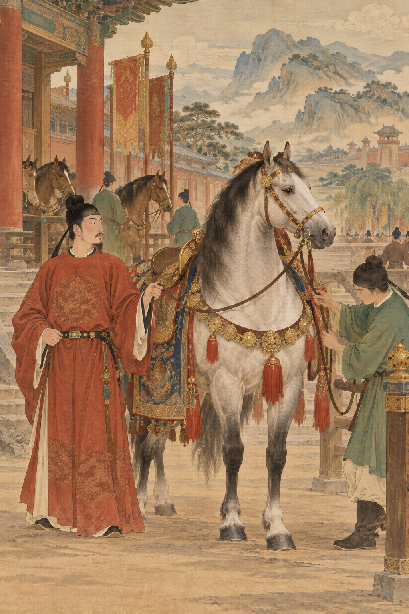
AI-generated historical scene unavailable Pear Garden and court arts
AI-generated historical interpretation in the Tang tomb-mural style. Clothing, architecture, and equipment are meant to evoke Tang religious and court life; this is not a surviving historical image.
Painting: Han Gan (horses); Wu Daozi at court.
Music: Pear Garden training school; Xuanzong himself a musician.
Poetry: Li Bai's brief, celebrated court tie in the early 740s.
Reputation needed talent plus access, education, and networks.
Sources: Stephen Owen; Schafer; court culture surveys in Lewis.
Poetry as elite skill and as record · High Tang into crisis
Poetry marked elite education, while Du Fu's career showed patronage could fail a great poet.
Scale:Complete Tang Poems later gathered 48,000+ poems by about 2,200 poets.
Skill: banquets, farewells, and the jinshi exam all rewarded polished verse.
Li Bai: dazzling court moment, then a life not contained by office.
Du Fu: failed to secure lasting office; after 755 wrote the suffering the court could not control.
Literature could serve power and still testify against catastrophe.
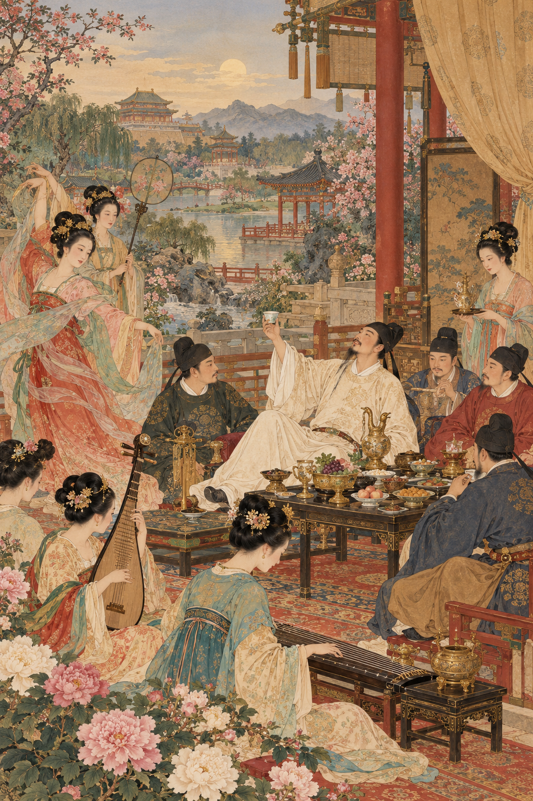
AI-generated historical scene unavailable Li Bai banquet
AI-generated historical interpretation in the Tang tomb-mural style. Clothing, architecture, and equipment are meant to evoke Tang religious and court life; this is not a surviving historical image.
Sources: Owen, The Great Age of Chinese Poetry; Owen, The Poetry of Du Fu.
Late coda · Huichang suppression · 845
Fiscal pressure under Wuzong drove a major state attack on Buddhist institutions.
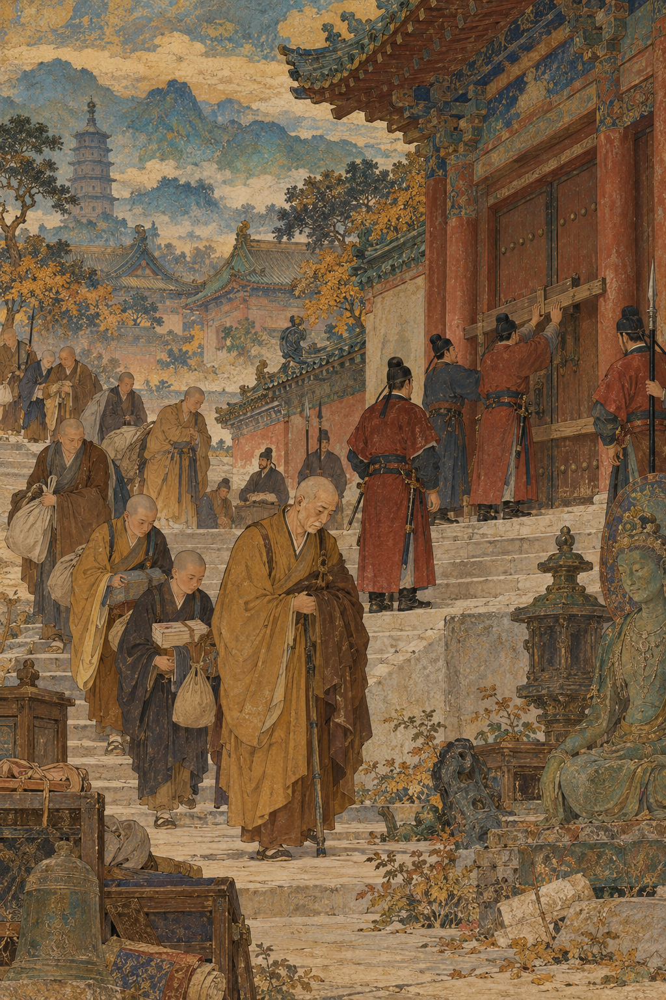
AI-generated historical scene unavailable 845 monastery suppression
AI-generated historical interpretation in the Tang tomb-mural style. Clothing, architecture, and equipment are meant to evoke Tang religious and court life; this is not a surviving historical image.
Timing: late in the Tang story, after tonight's main patronage arcs.
Motive mix: revenue, labor returned to tax registers, and doctrinal hostility at court.
Effect: thousands of monasteries closed; clergy returned to lay life; property seized.
The same institutional wealth that invited gifts invited seizure.
Separate hostile caricature from documented tools of power. Label AI images as interpretation.
If you remember only one sentence, remember the thesis.
In-class writing · Review Question 4 · assessed
Trace Buddhism's Tang trajectory from deep integration to state suppression.
Trace the trajectory of Buddhism during the Tang Dynasty, from its deep integration into Chinese society to its eventual state suppression.
Write 5 to 7 sentences. Use two integration examples (monastery roles, Mulian/adaptation, pilgrimage or Chan), one political patronage example (Wu or Xuanzong), and 845 as the suppression end point. End with a judgment: did patronage make suppression more likely, less likely, or both?
Verbatim Review Question 4 from the course textbook, ch. 5. Keep this slide in the required lecture path.
Beyond the lecture
Pierian Spring
Optional Independent Study
Five slides for Ennin, Longmen depth, Chan debate, poetry craft, and Huichang politics.
"A little learning is a dang'rous thing; / Drink deep, or taste not the Pierian spring." · Alexander Pope, An Essay on Criticism (1711)
Independent study · Ennin
Ennin's diary turns late Tang religion into weather, roads, meals, and police checks.
AI-generated historical scene unavailable Ennin toward Mount Wutai
AI-generated historical interpretation in the Tang tomb-mural style. Clothing, architecture, and equipment are meant to evoke Tang religious and court life; this is not a surviving historical image.
Dates: in China 838 to 847, including the Huichang years.
Wutai: pilgrimage logistics, patronage networks, and sacred geography in practice.
Value: an outsider's eye on monastic life and state pressure.
Read Reischauer's companion volume beside the diary translation.
After court: Du Fu's wartime poems show form carrying grief and blame.
Read one Li Bai banquet poem beside one Du Fu displacement poem.
AI-generated historical scene unavailable Exam poetry and banquet craft
AI-generated historical interpretation in the Tang tomb-mural style. Clothing, architecture, and equipment are meant to evoke Tang religious and court life; this is not a surviving historical image.
In Tang China, large Buddhist houses often held farmland worked by tenants and dependents, ran mills and oil presses, lent money, took pledges, and stored valuables. That economic role made monasteries local institutions of credit and landholding, which is why emperors both endowed them and later targeted them for revenue.